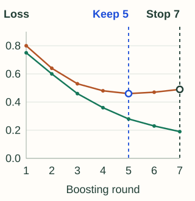

Regularization and Early Stopping
A GBM can keep improving training fit after its useful improvements on new data have stopped. Regularization controls the size and complexity of the corrections. Validation helps choose how many to keep.
Scale each tree’s influence
A learning rate of 0.1 turns a tree’s proposed correction of +2 into +0.2. A rate of 0.5 makes it +1. Smaller steps typically need more rounds, but they do not guarantee better validation performance.
Changing the rate changes later residuals and therefore later trees. Halving it and doubling the tree count does not generally reproduce the same model.
Choose which kind of complexity to limit
| Control | What it restricts |
|---|---|
| Depth or leaf count | How many regions and nested feature conditions one correction can use |
| Minimum leaf support | How little data or curvature can justify a leaf |
| Minimum split gain | How much improvement is required to add a split |
| Leaf-value penalties or limits | How large an individual score correction can become |
Parameter meanings vary by estimator. A minimum Hessian sum, for example, is not always a minimum row count.
Fit corrections using less than all available data
Row subsampling chooses a subset for a round; feature subsampling restricts candidate split features. Both introduce randomness and can reduce work or regularize fitting. They also remove information from an individual search, so assess the tradeoff.
The algorithm remains boosting: each round’s correction targets depend on the current ensemble.
The best round and the stopping round differ
Use validation rows that are excluded from all training rounds, including learned preprocessing. Suppose lower loss is better and patience is two rounds without a new minimum, with no additional minimum-improvement threshold:
| Round | Validation loss | Decision |
|---|---|---|
| 1–4 | 0.80 → 0.64 → 0.53 → 0.48 | Keep each improving round |
| 5 | 0.46 | New best |
| 6 | 0.47 | One round without improvement |
| 7 | 0.49 | Stop; retain the model from round 5 |

- Training loss
- Validation loss
A real curve can be noisy, flat, or still improving when the budget ends. Early stopping tracks the best observed validation result; it does not require a smooth U-shape. Check whether the library returns that model automatically or requires selecting an iteration range.
Change one source of error at a time
- Choose the loss, evaluation metric, and time/group boundaries before tuning.
- Train a modest-capacity baseline with enough rounds to observe the validation trend.
- Compare tree capacity and leaf support, then learning rate and sampling choices under comparable budgets.
- Record the selected iteration and evaluate the final procedure on reserved test data.
Treat curves as evidence, not a diagnosis by themselves
If both losses stay high, check features, optimization budget, loss choice, and capacity. If training improves while validation worsens, investigate overfitting and split mismatch. If validation varies sharply across runs, examine sample size, subgroup composition, and training randomness.
The systems chapter explains how modern libraries implement some of these controls.
Sources and next steps
- scikit-learn early-stopping example — Validation-based control of the number of boosting iterations.
- XGBoost early stopping — Best-iteration behavior and prediction selection.